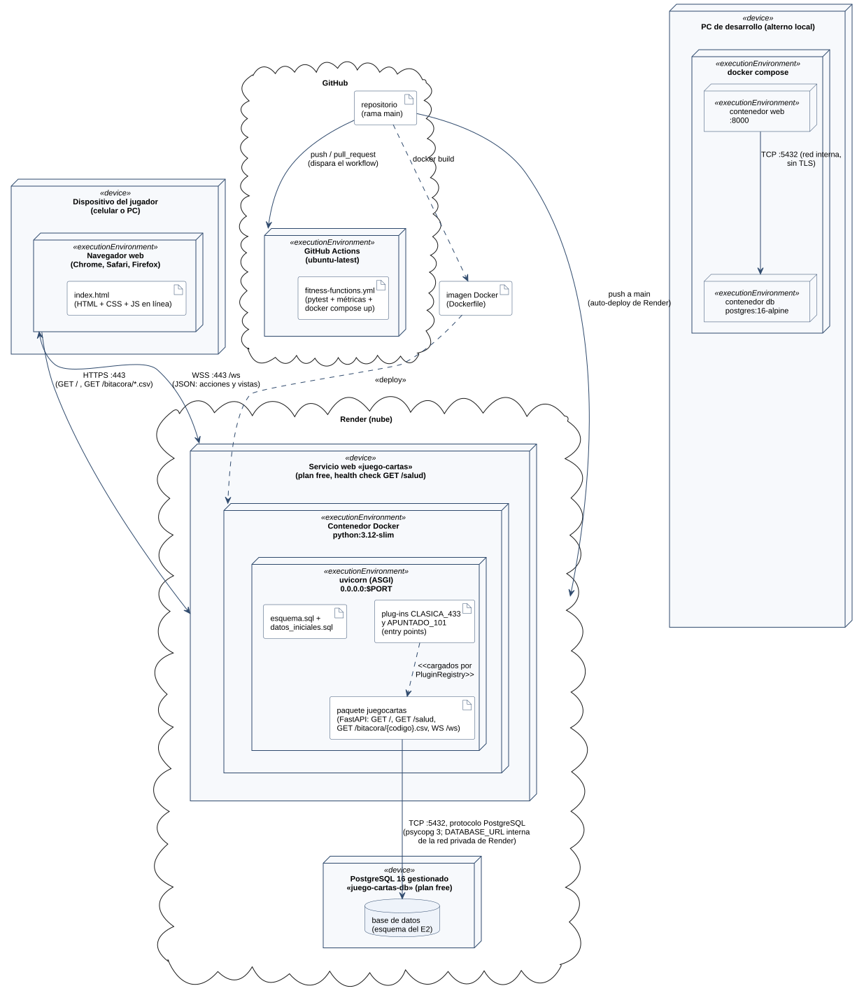
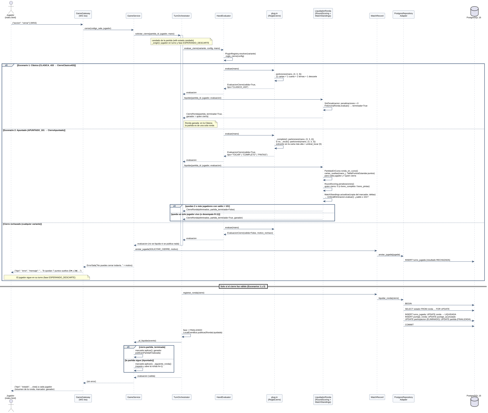
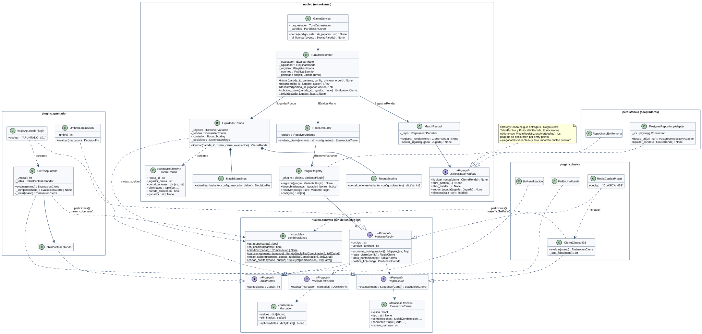

El MVP corre en Render. El jugador abre el juego desde el navegador de su celular o de su PC; el servidor le entrega una sola página (index.html, con el JavaScript en línea) y después todo el juego viaja por un WebSocket seguro (wss://…/ws) en mensajes JSON: el navegador manda acciones (crear, robar, descartar, cerrar) y recibe la vista de la mesa de cada jugador. El servidor es un contenedor Docker construido con el Dockerfile del repositorio (imagen python:3.12-slim) en el que uvicorn ejecuta la aplicación FastAPI con el núcleo y los dos plug-ins, que se cargan por entry points al arrancar. Los cierres de ronda y la bitácora de auditoría se guardan en una base PostgreSQL 16 gestionada por Render, a la que el servidor se conecta con psycopg por TCP 5432 usando la variable DATABASE_URL que inyecta el Blueprint (render.yaml). Si la base está vacía, el servidor crea el esquema del Entregable 2 al iniciar.
El código vive en GitHub. Cada push a main dispara el auto-deploy de Render, que reconstruye la imagen y la publica cuando GET /salud responde; en paralelo, GitHub Actions corre las fitness functions, las métricas y una prueba de humo con docker compose up. Ese mismo docker-compose.yml es el despliegue alterno para correr el juego en un PC local (contenedor web en el puerto 8000 y contenedor postgres:16-alpine).
| Origen → destino | Protocolo y puerto | Qué viaja |
|---|---|---|
| Navegador → servicio web | HTTPS, 443 | GET / (página), GET /bitacora/{código}.csv, GET /salud |
| Navegador ↔ servicio web | WSS, 443, ruta /ws | Acciones del jugador y vista de la mesa (JSON) |
| Servicio web → PostgreSQL 16 | TCP 5432, protocolo PostgreSQL | Apertura de partidas y rondas, jugadas, transacción de cierre |
| GitHub → Render | Webhook de auto-deploy | Nuevo build de la imagen en cada push a main |
| Local: web → db | TCP 5432 (red interna de compose) | Lo mismo que en Render, sin salir del PC |
Figura X
Diagrama UML de despliegue del MVP en Render y alterno local con docker compose

El diagrama sigue el código de un clic en «Cerrar». El GameGateway recibe {"accion": "cerrar"} y llama a GameService.cerrar(), que le pasa la mano completa a TurnOrchestrator.solicitar_cierre() (el GameOrchestrator de la guía). El orquestador toma el candado de la partida, comprueba que el jugador esté en turno y en la fase ESPERANDO_DESCARTE, y le pide a HandEvaluator.evaluar_cierre() que resuelva el plug-in de la variante en el PluginRegistry y ejecute su regla. En la Clásica, CierreClasico433 busca con particiones(mano, (4, 3, 3)) una cuarta y dos ternas sobre 11 cartas, y el LiquidadorRonda (el ScoringService de la guía) declara ganador a quien cerró, porque la partida dura una ronda. En el Apuntado, CierreApuntado prueba primero el cierre completo y luego el de «tocar» con tres ternas y un sobrante menor que 5 tras descartar la carta más alta; el liquidador calcula con cartas_sueltas() los puntos sueltos de los demás, los suma en una copia del marcador y le pregunta a UmbralEliminacion quién llegó a 101 y si queda un solo jugador vivo.
Solo si el cierre es válido, MatchRecord.registrar_ronda() lleva el CierreRonda al PostgresRepositoryAdapter, que lo escribe en una sola transacción (bloquea la ronda con FOR UPDATE, la marca LIQUIDADA, inserta los puntajes y actualiza el acumulado, los eliminados y la partida). Después del COMMIT se publica RondaLiquidada; el GameService actualiza el marcador y reparte la ronda siguiente o declara el ganador, y el gateway le envía a cada jugador su vista. Si la regla rechaza el cierre, no se liquida nada: la jugada queda en la bitácora como RECHAZADA y el jugador recibe el motivo que arma el plug-in, por ejemplo cuántos puntos le quedan sueltos.
Figura X
Diagrama UML de secuencia del intento de cierre de ronda y la liquidación

El diagrama muestra las clases que intervienen en el cierre con sus atributos y métodos reales (los tipos son los de las anotaciones de Python; el guion bajo inicial, que en Python marca lo privado, se representa con -). El paquete nucleo.contrato es lo único que pueden importar los plug-ins: los protocolos VariantePlugin, ReglaCierre, TablaPuntos y PoliticaFinPartida, los objetos de valor y el módulo combinaciones, que concentra la evaluación combinatoria. particiones() recorre con itertools.combinations las formas de sacar de la mano grupos o escaleras de los tamaños pedidos, y mejor_cobertura() busca con programación dinámica sobre subconjuntos de la mano (máscaras de bits con lru_cache) la agrupación que deja sueltos los menos puntos.
El desacople de las reglas combina microkernel y Strategy. El PluginRegistry descubre los plug-ins por el grupo de entry points juegocartas.variantes y valida la versión del contrato; cada plug-in (ReglaClasicaPlugin, ReglaApuntadoPlugin) entrega sus tres estrategias, y el núcleo (HandEvaluator, LiquidadorRonda) solo las pide por código de variante. La persistencia sigue el mismo principio: el núcleo define el puerto IRepositorioPartidas y el arranque le inyecta el adaptador de PostgreSQL o el de memoria.
Figura X
Diagrama UML de clases de implementación: núcleo, contrato, plug-ins y persistencia
